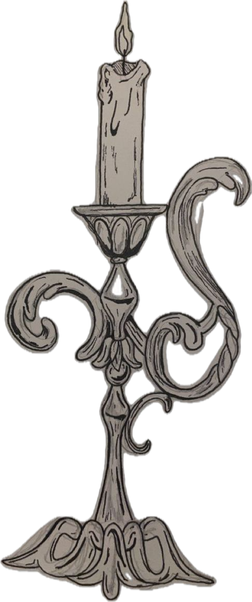

I am a current student in UCR, majoring in Cell, Molecular, and Developmental Biology and minoring in Art History. I am currently working in the Nelson Lab, where I am investigating the role of the plant hormone class of strigolactones affect plant development.
My interests include drawing, listening to music, and playing tons of sudoku. I also really love reading books and listening to audiobooks.
